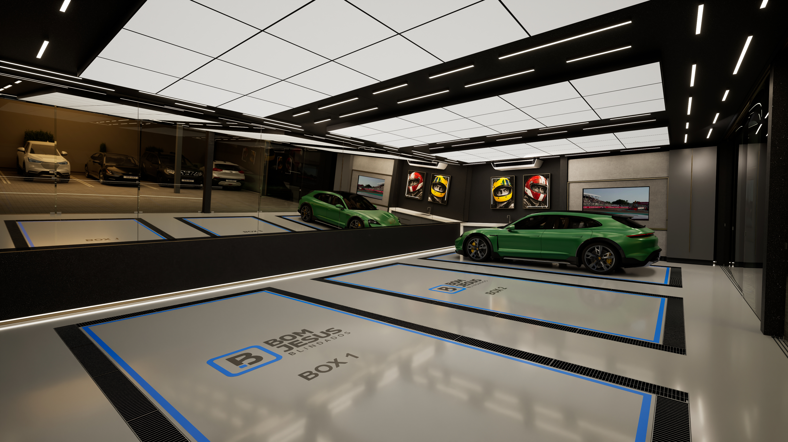

BOM JESUS / CABINE PPF
Explore a cabine.
Escolha uma categoria e toque no ponto sobre a imagem. Use as setas para seguir pelas vistas.
Nos materiais, a cabine fica livre para explorar os acabamentos. Em Iluminação, escolha um efeito. Para ver mais detalhes no celular, gire a tela na horizontal.
CABINE PPF
Visão geral
Escolha uma categoria para explorar.